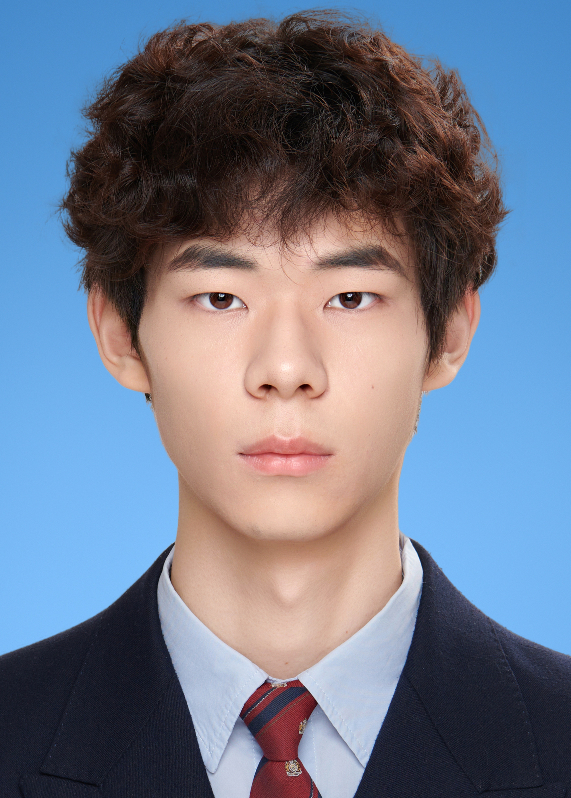

| 姓名 | 董天逸 |
 | ||
|---|---|---|---|---|
| 性别 | 男 | 年龄 | 19 | |
| 学历 | 本科 | 专业 | 计算机科学与技术 | |
| 联系电话 | 18863819890 | 邮箱 | 226815820@qq.com | |
| 项目经历 | ||||
|---|---|---|---|---|
| 时间 | 2025年 | |||
| 技能证书 |
|---|
| 兴趣爱好 | ||||
|---|---|---|---|---|
|
| 自我评价 | ||||
|---|---|---|---|---|
| 我是计算机科学与计算的一名学生，热衷于学习专业知识，同时对生活充满热情，喜欢参加体育活动和志愿活动。喜欢在课余时间提升自己，我喜欢读国内外的各种小说来丰富自己的见识和内涵。喜欢参与体育活动来锻炼身体，热爱打篮球，羽毛球等体育活动并参与排球院队。希望能在大学生活中丰富多彩，充实自己。 |